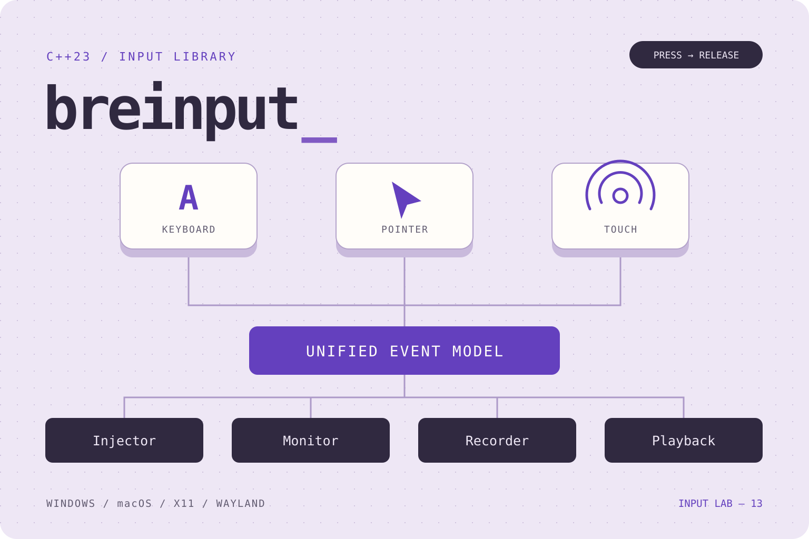

01 / THE INPUT LAYER
把系统差异，
收进输入层。
breinput 是独立的 C++23 静态输入库，将键盘、鼠标与触摸组织为统一事件，提供输入注入、监听、录制与按时间回放。它通过 Windows、macOS、Linux X11 与 Wayland 后端对接系统能力，以能力查询和结构化错误表达平台差异；应用可以用同一套接口组织输入流程，并通过 CMake 导出的 BreInput::BreInput 目标接入。
独立静态库，不依赖 BreFlow、BreConn 或 FFmpeg。网络传输、远程授权和投屏协议由上层应用负责。
02 / FOUR BUILDING BLOCKS
同一套事件，四块积木。
Event & Mapping
定义键盘、指针、按钮、滚轮与触摸事件，统一键码和坐标映射。
Injector
验证与排队、工作线程注入、能力查询，以及会话停止时的输入释放。
Monitor
分离原生捕获与用户回调，支持全局监听或平台授权下的受控捕获。
Recorder / Playback
记录事件和单调时钟间隔，通过快照按时间回放，支持取消等待。
03 / SESSION LIFECYCLE
输入有顺序，
会话有收尾。
Submit 成功表示验证并入队；实际注入失败通过错误回调交给应用处理。
- 00
Start()
建立会话，确认后端与系统权限。
- 01
Submit(event)
验证事件，进入有界队列。
- 02
WaitForIdle()
等待已排队的输入处理完成。
- 03
Stop()
释放本实例按下的输入，关闭资源。
THE CHALLENGE
事件顺序之外，
还有线程与权限。
不同系统的键码、坐标、权限和捕获机制并不一致。异步注入还需要处理队列拥塞、按下与释放的顺序，以及停止会话时遗留的按键状态；如果在原生钩子里直接执行业务回调，耗时操作也会干扰捕获流程。
THE DESIGN
统一接口，
明确失败的边界。
以 USB HID 键码和统一事件模型隔离平台差异，Injector 在工作线程消费有界队列，Monitor 将事件交给独立线程执行回调。能力查询与结构化错误让调用方判断当前会话能做什么，ReleaseAll 和停止清理管理已按下的输入；Recorder 与 Playback 则在同一事件模型上完成时间记录和可取消回放。
04 / PLATFORM CAPABILITIES
相同接口，尊重各自的系统。
User32
Windows
- 注入
- 键鼠；系统允许的触摸
- 监听
- 全局键鼠钩子
注入受桌面权限与进程完整性级别约束。
ApplicationServices
macOS
- 注入
- 键鼠
- 监听
- 系统允许的事件监听
注入需辅助功能权限；不支持触摸注入。
XTest · XRecord
Linux / X11
- 注入
- 键鼠
- 监听
- XRecord 键鼠监听
使用 Xorg evdev 键码约定；不支持触摸注入。
Portal · libei / EIS
Linux / Wayland
- 注入
- RemoteDesktop 授权后优先 EIS，旧版 Portal 可用 Notify
- 监听
- InputCapture Portal 受控捕获
由桌面在鼠标越过边缘时激活捕获；能力取决于桌面实现与授权结果。
Wayland 使用系统 Portal 授权流程，受控捕获不等于被动全局监听。运行时缺少 libei 或必需符号时，注入可回退至 Portal Notify，受控捕获返回结构化错误。
05 / ENGINEERING DETAILS
让小动作，
有可靠的落点。
- USB HID 键码统一键盘事件，支持有符号桌面坐标、相对位移与归一化画面坐标
- MapPoint 处理预览黑边、画面旋转，以及拖出画面时的释放映射
- 默认 256 项有界队列，只合并连续绝对移动，保留相对位移与按下 / 释放顺序
- 队列满明确返回 QueueFull，应用可释放输入或停止会话
- Monitor 通过独立交付线程执行回调，原生捕获线程只负责排队
- Recorder 提供线程安全快照，Playback 按时间回放并支持 stop_token 中断
06 / READY TO INTEGRATE
接入你的 C++ 应用。
安装 SDK 后，设置 CMAKE_PREFIX_PATH 指向安装目录，通过导出目标链接静态库。平台依赖随目标传递。
find_package(BreInput CONFIG REQUIRED)
target_link_libraries(your_app PRIVATE BreInput::BreInput)